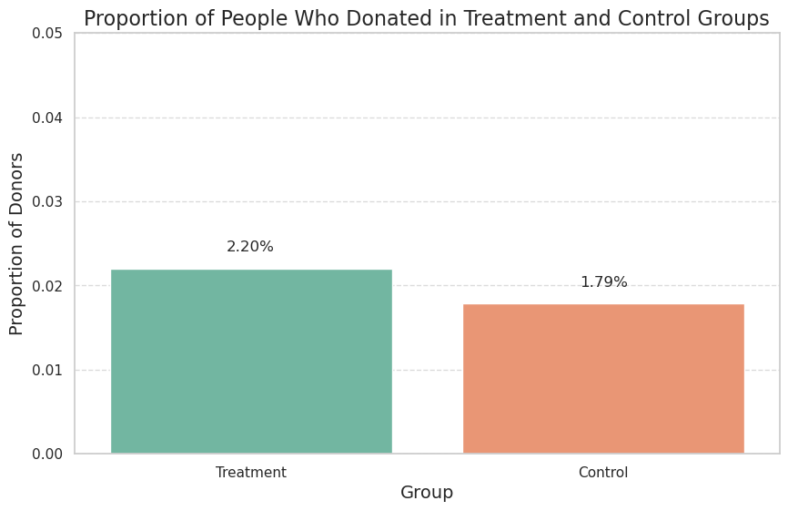
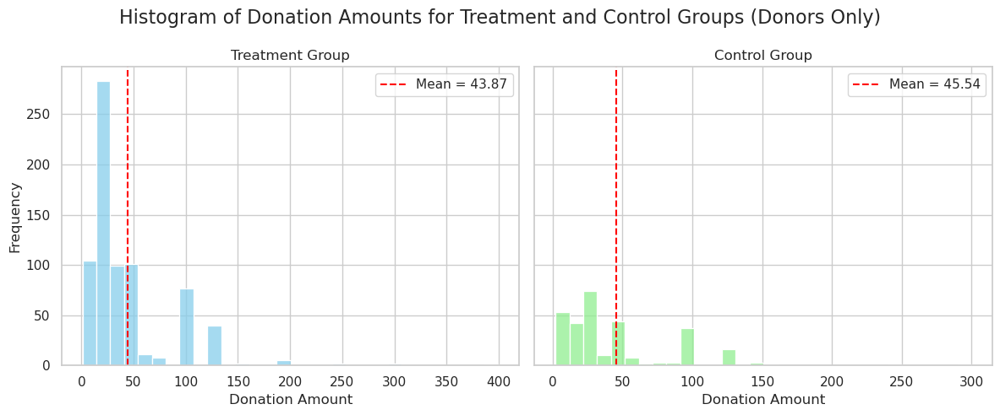
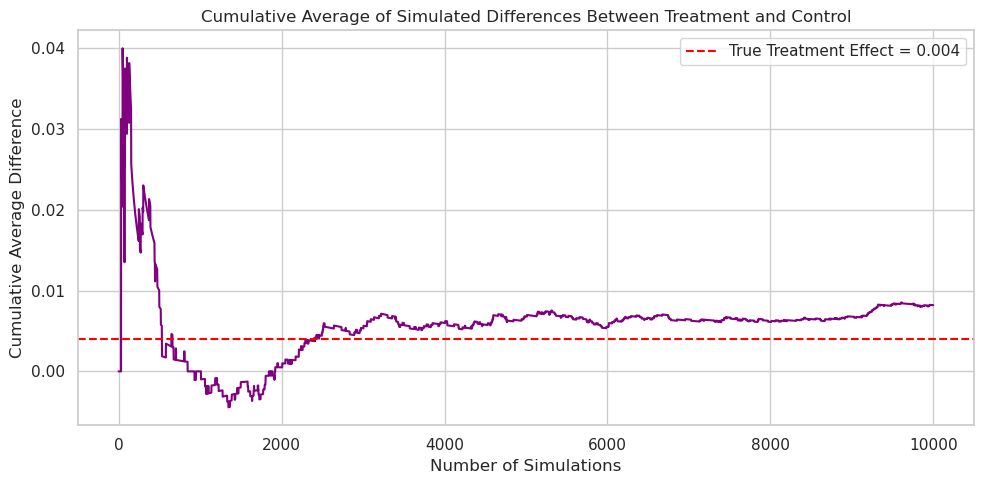
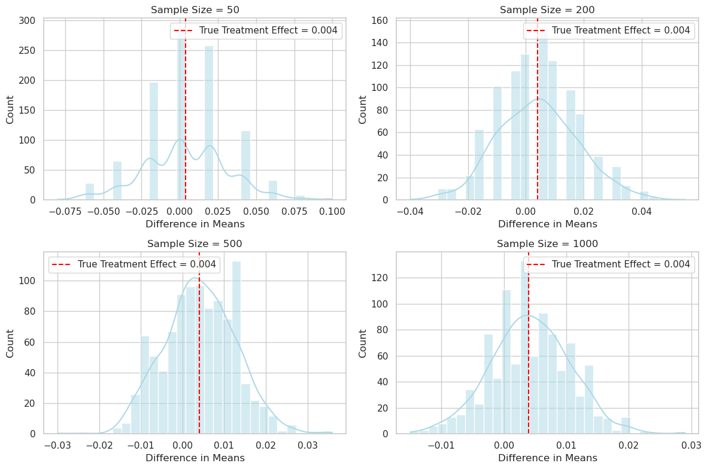

A Replication of Karlan and List (2007)
Introduction
Dean Karlan at Yale and John List at the University of Chicago conducted a field experiment to test the effectiveness of different fundraising letters. They sent out 50,000 fundraising letters to potential donors, randomly assigning each letter to one of three treatments: a standard letter, a matching grant letter, or a challenge grant letter. They published the results of this experiment in the American Economic Review in 2007. The article and supporting data are available from the AEA website and from Innovations for Poverty Action as part of Harvard’s Dataverse. Giving USA shows that in the United States, charitable gifts of money have been 2 percent or more of GDP since 1998, and more than 89 percent of Americans donate to charity. In order to understand the economics of charity, this field experiment was conducted to understand up to what extent the ‘price’ matters in a charitable fundraising using a mail solicitation. In other words the main aim of this experiment was to understand, can offering a matching grant (where a donation is “matched” by another donor) influence whether people give to charity—and how much they give?
The following experimental setup was used for the study:
A large-scale field experiment was done with over 50,000 previous donors to a real liberal political charity in the U.S. The donors were randomly split into two groups: - Control group (no mention of a match) - Treatment group (offered a matching grant—e.g., if you donate $1, another $1, $2, or $3 is added)
Within the treatment group, three factors were varied: - Match ratio: $1:$1, $2:$1, or $3:$1 - Maximum match amount: $25,000, $50,000, $100,000, or unstated - Suggested donation amount: based on past giving (same as before, or slightly higher)
This project seeks to replicate their results.
Data
Description
To conduct this experiment 50,083 donors were chosen and different statistics were collected for this experiment. Individuals were randomly assigned to either a control group or a matching grant treatment group, and within the matching grant treatment group individuals were randomly assigned to different matching grant rates,matching grant maximum amounts, and suggested donation amounts.The collected data had the following information for each donor:
The following table describes the categorical data with the number of rows populated (Count), number of unique values in that particular field (unique), the most common value for a field (Top), and the number of occurrences of the top value (frequency).
The following tables have the number of rows populated for a field (Count), Mean value of the field (Mean), Standard deviation of the field (Std Dev), Minimum value of the field (Min), Maximum value of the field (Max) and 25, 50 and 75 percentile of the values for the field.
Summary description on Numerical Variables:
From the above tables we can infer that -
Donation behavior is highly skewed: while the average donation (amount) is $0.92, the median is $0, indicating that most donors did not give during the campaign.
The maximum recorded donation is $400, and the standard deviation is 8.71, showing wide variability among those who did give. The previous highest donation (hpa) had a mean of $59.38, with values ranging from $0 to $1000.
Donor history shows that the average donor made 8 prior donations (freq), with some making over 200.
State-level response rates averaged 2.06% overall, with slightly higher response among treated individuals (2.20%) compared to control (1.77%).
Demographic indicators reveal:
About 28% of donors were female, and 9% were couples.
The average median household income by zip code was around $54,816.
The average zip code was 82% white, 9% Black, and 87% urban.
About 39% of zip code residents had a bachelor’s degree or higher.
Balance Test
T-statistic test on multiple variables in treatment and control groups
As an ad hoc test of the randomization mechanism, I provide a series of tests that compare aspects of the treatment and control groups to assess whether they are statistically significantly different from one another. t-test is performed on a number of variables among the treatment and control group. the following code is used to perform the t-tests on different variables.
import numpy as np
from scipy.stats import t
# Split treatment and control
treatment_group = df[df['treatment'] == 1]['amountchange'].dropna()
control_group = df[df['treatment'] == 0]['amountchange'].dropna()
# Means
mean_treat = np.mean(treatment_group)
mean_control = np.mean(control_group)
# Sizes
n_treat = len(treatment_group)
n_control = len(control_group)
# Variances
var_treat = np.var(treatment_group, ddof=1)
var_control = np.var(control_group, ddof=1)
# --- Manual t-statistic ---
numerator = mean_treat - mean_control
denominator = np.sqrt((var_treat / n_treat) + (var_control / n_control))
t_stat = numerator / denominator
# --- Degrees of Freedom ---
df_num = (var_treat / n_treat + var_control / n_control) ** 2
df_den = ((var_treat / n_treat) ** 2) / (n_treat - 1) + ((var_control / n_control) ** 2) / (n_control - 1)
df = df_num / df_den
# --- Two-tailed p-value ---
p_value = 2 * t.sf(np.abs(t_stat), df)
print(f"T-statistic: {t_stat:.4f}")
print(f"Degrees of freedom: {df:.2f}")
print(f"P-value: {p_value:.4f}")
if p_value < 0.05:
print("Statistically significant at 95% confidence level")
else:
print("Not statistically significant")The following variables were tested (along with the t-test statistic):
‘mrm2’ (number of months since last donation) - T-statistic: 0.1195 P-value: 0.9049. Inference: No statistically significant difference
‘freq’ (Number of prior donations) - T-statistic: -0.1108 P-value: 0.9117. Inference: No statistically significant difference
‘red0’ (Red state) - T-statistic: 1.8773 P-value: 0.0605. Inference - No statistically significant difference
‘blue0’ (Blue state) - T-statistic: -1.8773 P-value: 0.0605. Inference - No statistically significant difference
‘years’ (Number of years since initial donation) - T-statistic: -1.0909 P-value: 0.2753. Inference - No statistically significant difference
‘hpa’ (Highest previous contribution) - T-statistic: 0.9704 P-value: 0.3318. Inference: No statistically significant difference
‘psch_atlstba’ (Proportion who finished college within zip code) - T-statistic: -1.8427 P-value: 0.0654. Inference: No statistically significant difference
‘amountchange’ (Change in amount given) - T-statistic: 0.4713 P-value: 0.6374. Inference: No statistically significant difference
A regression analysis on ‘amountchange’
A regression was conducted for ‘amountchange’ as dependent variable and ‘freq’, ‘years’, ‘hpa’,‘ask1’,‘ask2’,‘ask3’,‘mrm2’ as independent variable. Code shown below.
import statsmodels.api as sm
# Prepare data
X = df[[ 'freq', 'years', 'hpa','ask1','ask2','ask3','mrm2']]
y = df['amountchange']
# Add constant (intercept)
X = sm.add_constant(X)
# Fit linear regression model
model = sm.OLS(y, X, missing='drop').fit()
# Output results
print(model.summary())Table 1: Linear Regression Output – amountchange
| Variable | Coefficient | Std. Error | t-Statistic | P-value | 95% CI Lower | 95% CI Upper |
|---|---|---|---|---|---|---|
| const | -24.914 | 14.772 | -1.687 | 0.092 | -53.867 | 4.040 |
| freq | 1.105 | 0.675 | 1.638 | 0.102 | -0.218 | 2.427 |
| years | -0.973 | 1.405 | -0.693 | 0.489 | -3.727 | 1.781 |
| hpa | -0.153 | 0.218 | -0.703 | 0.482 | -0.581 | 0.274 |
| ask1 | 1.708 | 5.187 | 0.329 | 0.742 | -8.458 | 11.874 |
| ask2 | 1.246 | 4.300 | 0.290 | 0.772 | -7.183 | 9.674 |
| ask3 | -2.361 | 1.825 | -1.294 | 0.196 | -5.939 | 1.216 |
| mrm2 | 0.319 | 0.484 | 0.659 | 0.510 | -0.629 | 1.267 |
- Observations: 50,082
- R-squared: 0.001
- Adjusted R-squared: 0.001
]
R-squared: 0.001 - Only 0.1% of the variation in amountchange is explained by the model — this is very low, which is expected in a clean RCT. All p-values > 0.05 None of the pre-treatment variables are statistically significant predictors.
From the above tests (regression and t-test), we see that none of the tested variables show a statistically significant difference between the treatment and control groups. This supports the validity of the experiment as a randomized controlled trial (RCT), where treatment assignment is expected to be independent of observable characteristics.
Experimental Results
Charitable Contribution Made
First, I analyze whether matched donations lead to an increased response rate of making a donation. The following chart shows the proportion of Donors in Control and Treatment group.
Figure 1: Proportion of Donors by Group

A T-test on ‘gave’ yields the following statistical results -
| Stat | Value |
|---|---|
| T-statistic | 3.2095 |
| P-value | 0.0013 |
Statistically significant difference for ‘gave’ in treatment and control group (p < 0.05).
Inference: There is a statistically significant difference in donation behavior between people who received the treatment (matching grant offer) and those who did not. From the bar plot above, we can say that people in the treatment group were more likely to donate, meaning the matching grant positively influenced giving behavior.
Table 2: Probit Regression Output – Probability of Donation
| Variable | Marginal Effect | Std. Error | z-value | P-value | 95% CI Lower | 95% CI Upper |
|---|---|---|---|---|---|---|
| treatment | 0.0043 | 0.001 | 3.104 | 0.002 | 0.002 | 0.007 |
From the above results we observe that being in a treatment group has a p-value< 0.05 and hence, offering a match (treating the donors) results in an increase in the likelihood of a donor donating any amount of money.
NOTE: Linear regression results appear replicate Table 3 column 1 in the paper. Probit results do not, despite Table 3 indicating its results come from probit regressions…
Differences between Match Rates
Next, I assess the effectiveness of different sizes of matched donations on the response rate.
A series of T-tests are performed to test whether the size of the match ratio has an effect on whether people donate or not. The following observations were recorded :
Table 3: T-Test Results for Match Ratio Comparisons
| Test Comparison | t-statistic | p-value |
|---|---|---|
| 1:1 vs 2:1 | -0.9650 | 0.3345 |
| 1:1 vs 3:1 | -1.0150 | 0.3101 |
| 2:1 vs 3:1 | -0.0501 | 0.9600 |
All the above tests have a very large P-value (p > 0.05). This suggests that there is no significant statistical difference in the donation likelihood when different higher match ratios are offered which are in line with the author’s article on page 8.
A regression test to support the above argument is also conducted with match ratios as the independent variable and ‘gave’ as the dependent variable. The code below is used to regress ‘gave’ on match ratios code
import numpy as np
import pandas as pd
import statsmodels.api as sm
df = pd.read_csv('file_path')
# Create dummy for ratio1 (1:1 match)
df['ratio1'] = np.where(df['ratio'] == "1", 1, 0)
# Prepare features and outcome
X = df[['ratio1', 'ratio2', 'ratio3']]
y = df['gave'].astype(int)
# Add constant
X = sm.add_constant(X)
# Fit OLS model
model = sm.OLS(y, X, missing='drop').fit()
# Show summary
print(model.summary())The results of the regression are tabulated further. #### Table 4: OLS Regression — Probability of Donation (gave)
| Variable | Coefficient | Std. Error | t-Statistic | P-value | 95% CI Lower | 95% CI Upper |
|---|---|---|---|---|---|---|
| const | 0.0179 | 0.001 | 16.225 | 0.000 | 0.016 | 0.020 |
| ratio1 | 0.0029 | 0.002 | 1.661 | 0.097 | -0.001 | 0.006 |
| ratio2 | 0.0048 | 0.002 | 2.744 | 0.006 | 0.001 | 0.008 |
| ratio3 | 0.0049 | 0.002 | 2.802 | 0.005 | 0.001 | 0.008 |
Again, it is observed from Table 4 that, none of the match ratio variables are statistically significant in influencing the likelihood of a donor making a donation. Both the T-tests and the Regression results support this argument.
The difference in average response rate between the 1:1 and 2:1 match ratios and the 2:1 and 3:1 ratios are calculated from the data collected. The values are shown in Table 5.2 The difference in average response rate between thecoeffecients of match ratios calculated using the regression (as seen in Table 4) estimated earlier turns out to be equal to those seen in Table 5.2 and Table 6.
# Calculate group-wise response rates from raw data
rate_1to1 = df[df['ratio1'] == 1]['gave'].mean()
rate_2to1 = df[df['ratio2'] == 1]['gave'].mean()
rate_3to1 = df[df['ratio3'] == 1]['gave'].mean()
# Compute differences
diff_2_vs_1 = rate_2to1 - rate_1to1
diff_3_vs_2 = rate_3to1 - rate_2to1
diff_3_vs_1 = rate_3to1 - rate_1to1Table 5.1: Response Rates by Match Ratio (From Data)
| Match Ratio | Response Rate |
|---|---|
| 1:1 | 0.0207 |
| 2:1 | 0.0226 |
| 3:1 | 0.0227 |
Table 5.2: Response Rate Differences by Match Ratio (From Data)
| Comparison | Response Rate Difference |
|---|---|
| 2:1 vs 1:1 | 0.0019 |
| 3:1 vs 2:1 | 0.0001 |
| 3:1 vs 1:1 | 0.0020 |
Table 6: Regression Coefficient Differences by Match Ratio
| Comparison | Regression Coefficient Difference |
|---|---|
| 2:1 vs 1:1 | 0.0048 - 0.0029 = 0.0019 |
| 3:1 vs 2:1 | 0.0049 - 0.0048 = 0.0001 |
| 3:1 vs 1:1 | 0.0049 - 0.0029 = 0.0020 |
Both the raw data and the regression results show that increasing the match ratio has only a very small effect on the probability of donating. The increase from a 1:1 to a 2:1 match raises the response rate by just 0.19 percentage points, and from 2:1 to 3:1 by only 0.01 percentage points.This indicates that larger match ratios do not provide additional meaningful gains, consistent with the authors’ conclusion.
Size of Charitable Contribution
In this subsection, I analyze the effect of the size of matched donation on the size of the charitable contribution.
I performed a T-test on the ‘amount’ variable for treatment group.
import numpy as np
from scipy.stats import t
# Prepare data
treat_amt = df[df['treatment'] == 1]['amount'].dropna()
control_amt = df[df['treatment'] == 0]['amount'].dropna()
# Sample sizes
n1 = len(treat_amt)
n0 = len(control_amt)
# Means
mean1 = np.mean(treat_amt)
mean0 = np.mean(control_amt)
# Variances (sample)
var1 = np.var(treat_amt, ddof=1)
var0 = np.var(control_amt, ddof=1)
# Compute t-statistic manually
numerator = mean1 - mean0
denominator = np.sqrt((var1 / n1) + (var0 / n0))
t_stat_manual = numerator / denominator
# Degrees of freedom
df_num = (var1 / n1 + var0 / n0) ** 2
df_den = ((var1 / n1) ** 2) / (n1 - 1) + ((var0 / n0) ** 2) / (n0 - 1)
dof = df_num / df_den
# Compute p-value (two-sided)
p_val_manual = 2 * t.sf(np.abs(t_stat_manual), dof)The t-statistic was 1.9183 and the p-value was 0.0551, which is slightly above the conventional 5% significance level. This indicates that the difference in average donation amount between the treatment and control groups is not statistically significant at the standard threshold. While the result suggests that receiving a matching grant letter might increase donation amounts, the evidence is not strong enough to confirm a significant effect.
To analyze the effect of treatment on donation amount conditional on donating, I ran a bivariate OLS regression restricted to individuals with positive donation amounts (amount > 0). The tabulated in Table 7. The intercept indicates that control group donors donated an average of $45.54, while treated donors donated $1.67 less on average. However, this difference is not statistically significant since the p value = 0.561). Since the model conditions on having donated, the treatment effect here does not have a causal interpretation, and reflects only differences among those already inclined to give.
Table 7: OLS Regression — Donation Amount (Only Donors)
| Variable | Coefficient | Std. Error | t-Statistic | P-value | 95% CI Lower | 95% CI Upper |
|---|---|---|---|---|---|---|
| const | 45.5403 | 2.423 | 18.792 | 0.000 | 40.785 | 50.296 |
| treatment | –1.6684 | 2.872 | –0.581 | 0.561 | –7.305 | 3.968 |
- Number of observations: 1,034
- R-squared: 0.000
- F-statistic: 0.3374 (p = 0.561)
- Dependent variable:
amount(only where amount > 0)
We plot histograms for the treatment group and one for the control donation amounts only among people who donated. The code below is used to generate these plots. The plot obtain is seen below in Figure 2.
#| label: donation-histograms
#| fig-cap: "Histogram of Donation Amounts for Treatment and Control Groups (Donors Only)"
#| fig-subcap: ["Treatment Group", "Control Group"]
#| layout-ncol: 2
#| echo: true
import matplotlib.pyplot as plt
import seaborn as sns
# Filter to donors only
donors = df[df['amount'] > 0].copy()
# Split by group
treat_donors = donors[donors['treatment'] == 1]
control_donors = donors[donors['treatment'] == 0]
# Calculate means
mean_treat = treat_donors['amount'].mean()
mean_control = control_donors['amount'].mean()
# Create subplots
fig, axes = plt.subplots(1, 2, figsize=(12, 5), sharey=True)
fig.suptitle("Histogram of Donation Amounts for Treatment and Control Groups (Donors Only)", fontsize=16)
# Treatment histogram
sns.histplot(treat_donors['amount'], bins=30, ax=axes[0], color='skyblue')
axes[0].axvline(mean_treat, color='red', linestyle='--', label=f'Mean = {mean_treat:.2f}')
axes[0].set_title("Treatment Group")
axes[0].set_xlabel("Donation Amount")
axes[0].set_ylabel("Frequency")
axes[0].legend()
# Control histogram
sns.histplot(control_donors['amount'], bins=30, ax=axes[1], color='lightgreen')
axes[1].axvline(mean_control, color='red', linestyle='--', label=f'Mean = {mean_control:.2f}')
axes[1].set_title("Control Group")
axes[1].set_xlabel("Donation Amount")
axes[1].legend()
plt.tight_layout()
plt.show()
Figure 2: Histogram of Dantion Amounts for Treatment and Control Groups
 Both groups have a highly right-skewed distribution — most donors give smaller amounts, but a few give much more. The average donation in the control group is slightly higher than in the treatment group. This matches your earlier OLS regression result: The treatment group gave $1.67 less on average (not statistically significant).
Simulation Experiment
As a reminder of how the t-statistic “works,” in this section I use simulation to demonstrate the Law of Large Numbers and the Central Limit Theorem.
Suppose the true distribution of respondents who do not get a charitable donation match is Bernoulli with probability p=0.018 that a donation is made.
Further suppose that the true distribution of respondents who do get a charitable donation match of any size is Bernoulli with probability p=0.022 that a donation is made.
Law of Large Numbers
to do: Simulate 10,000 draws from the control distribution and 10,000 draws from the treatment distribution. You’ll then calculate a vector of 10,000 differences, and then you’ll plot the cumulative average of that vector of differences. This average will likely be “noisey” when only averaging a few numbers, but should “settle down” and approximate the treatment effect (0.004 = 0.022 - 0.018) as the sample size gets large. Explain the chart to the reader.
I simulate 10,000 draws from the control distribution and 10,000 draws from the treatment distribution and further calculate a vector of 10,000 differences. This simulation in conducted using the code below
import numpy as np
import matplotlib.pyplot as plt
# Set seed for reproducibility
np.random.seed(42)
# Simulate 10,000 binary draws
control = np.random.binomial(n=1, p=0.018, size=10000)
treatment = np.random.binomial(n=1, p=0.022, size=10000)
# Compute difference in outcomes
differences = treatment - control
# Compute cumulative average
cumulative_avg = np.cumsum(differences) / np.arange(1, len(differences) + 1)
# Plot
plt.figure(figsize=(10, 5))
plt.plot(cumulative_avg, color='purple')
plt.axhline(0.004, color='red', linestyle='--', label='True Treatment Effect = 0.004')
plt.title("Cumulative Average of Simulated Differences Between Treatment and Control")
plt.xlabel("Number of Simulations")
plt.ylabel("Cumulative Average Difference")
plt.legend()
plt.grid(True)
plt.tight_layout()
plt.show()Figure 3: Cumulative Average of Simulated Differences Between Treatment and Control
 The chart above demonstrates the Law of Large Numbers (LLN) using simulated binary outcomes from a Bernoulli distribution. In this simulation:
- Control group donations were drawn with probability p = 0.018
- Treatment group donations were drawn with p = 0.022
The cumulative difference in donation behavior between the groups was tracked across 10,000 simulations. While the average difference fluctuates at first due to randomness, it gradually settles near 0.004, the true treatment effect. This convergence illustrates the Law of Large Numbers: as the sample size increases, the sample average approaches the true population average.
Central Limit Theorem
to do: Make 4 histograms at sample sizes 50, 200, 500, and 1000. To do this for a sample size of e.g. 50, take 50 draws from each of the control and treatment distributions, and calculate the average difference between those draws. Then repeat that process 999 more times so that you have 1000 averages. Plot the histogram of those averages. The repeat for the other 3 histograms. Explain this sequence of histograms and its relationship to the central limit theorem to the reader.
Central Limit Theorem: Simulation
The sequence of histograms below in Figure 4 illustrates the Central Limit Theorem (CLT). Each plot shows the distribution of the difference in sample means between a treatment group (p = 0.022) and a control group (p = 0.018) based on 1000 simulations for different sample sizes.
As the sample size increases: - The distribution of the average differences becomes more symmetric and bell-shaped - The sampling distribution centers around the true treatment effect (0.004) - The variability (spread) decreases
This demonstrates the CLT: as sample size increases, the sampling distribution of the sample mean approaches a normal distribution, regardless of the original (Bernoulli) distribution of the data. The code for simulation is given below.
Figure 4: Central Limit Theorem - Simulation

import numpy as np
import matplotlib.pyplot as plt
import seaborn as sns
# Set seed for reproducibility
np.random.seed(42)
# Settings
sample_sizes = [50, 200, 500, 1000]
simulations = 1000
true_diff = 0.022 - 0.018
# Create 4 subplots
fig, axes = plt.subplots(2, 2, figsize=(12, 8))
for idx, n in enumerate(sample_sizes):
diffs = []
for _ in range(simulations):
control = np.random.binomial(1, 0.018, size=n)
treatment = np.random.binomial(1, 0.022, size=n)
diff = np.mean(treatment) - np.mean(control)
diffs.append(diff)
ax = axes[idx // 2][idx % 2]
sns.histplot(diffs, bins=30, kde=True, ax=ax, color='lightblue')
ax.axvline(true_diff, color='red', linestyle='--', label='True Treatment Effect = 0.004')
ax.set_title(f"Sample Size = {n}")
ax.set_xlabel("Difference in Means")
ax.legend()
plt.tight_layout()
plt.show()